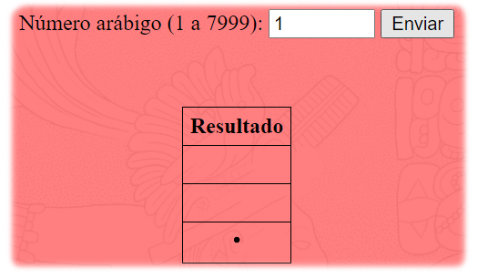
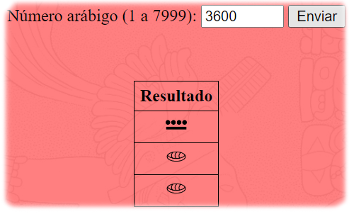

Tutorial conversor de Arábigo a Maya
Este tutorial se divide en dos partes de acuerdo a la función del conversor:
Tutorial 1: Arábigo - Maya
Para utilizar el conversor Arábigo - Maya, primeramente hay que ingresar un número del 1 al 7999, como se solicita.
A continuación, el sistema conversor hará su estimación y mostrará en pantalla el número en Maya.

En situaciones excepcionales, el sistema le arrojará un mensaje si no se ha ingresado un parámetro correcto.
Las situaciones excepcionales son:
- Ingresar un número fuera del rango (1 - 7999).
- Ingresar algo diferente a un número.
- No ingresar nada.
Tutorial 2: Maya - Arábigo
Para utilizar el conversor Maya - Arábigo, es indispensable ingresar los valores dando click sobre la imagen, respecto a cada nivel.
El sistema arrojará una respuesta automática de los valores ingresados en la tabla en la parte inferior.
Igual que en el sistema anterior, el sistema mostrará un mensaje al usuario si los parámetros no son apropiados para la lectura de estos números.
Debido a la peculiaridad, las situaciones excepcionales de este sistema son los siguientes:
- Se quiere ingresar un número (nivel 3) en donde el nivel inferior (nivel 2) está vacío.
- Se quiere ingresar cero (nivel 2) sobre otro número (nivel 1) y el nivel superior (nivel 3) está vacío.
- Se quiere apilar dos ceros (nivel 1) y (nivel 2).
Nota: para el buen funcionamiento del sistema, se deberá por ejemplo, acceder un número cualquiera (excepto 0) en el nivel 2 y posteriormente seleccionar un número en el nivel 3, esto habilitará la función del cero en el nivel 2. Esto es así debido para evitar que el sistema arroje un número inválido.
Nota 2: el ícono de escoba que aparece en los campos elimina el número del nivel correspondiente (dos en la situación de que el número en el nivel 2 sea 0).
Sin más que añadir, te agradezco por utilizar mi sistema.